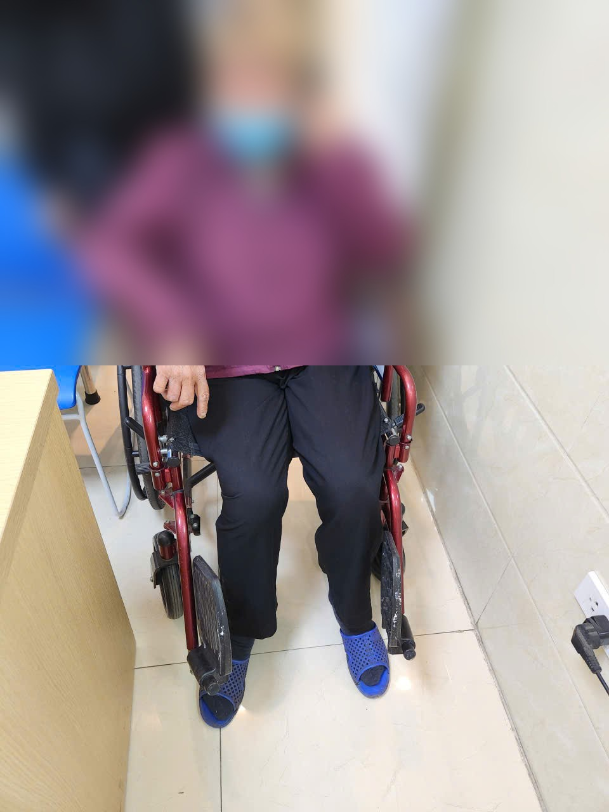
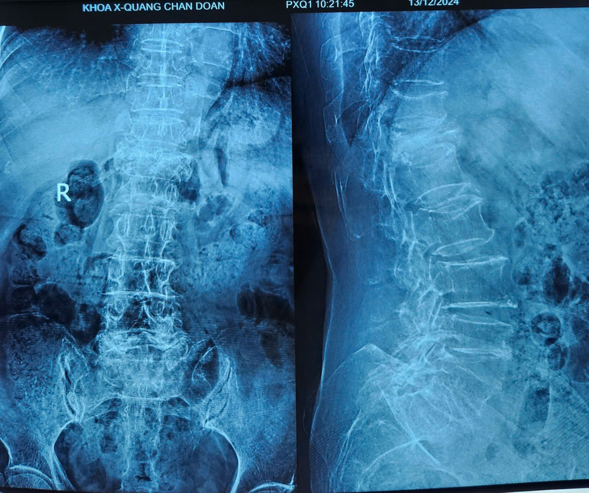
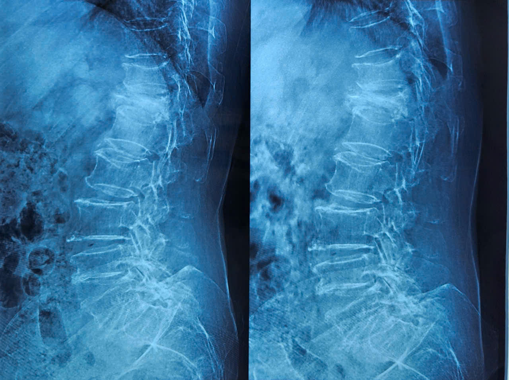

Bà N.T.H., 72 tuổi, đến phòng khám trong tình trạng không thể tự đi lại sau một cú trượt chân nhẹ khi xuống cầu thang. X-quang cho thấy nhiều đốt sống đã xẹp từ trước — lặng lẽ, không ai hay biết. Đây không phải câu chuyện hiếm gặp.

Loãng xương — căn bệnh không có tiếng động
Loãng xương là tình trạng mật độ xương giảm và cấu trúc xương bị suy yếu tiến triển, khiến xương ngày càng mỏng manh và dễ gãy hơn. Điều làm cho căn bệnh này đặc biệt nguy hiểm chính là tính chất hoàn toàn không có triệu chứng trong giai đoạn đầu và giữa. Người bệnh không đau, không khó chịu, không biết gì — cho đến khi xương gãy.
Ở phụ nữ sau mãn kinh, tốc độ mất xương xảy ra rất nhanh trong 5–7 năm đầu. Nguyên nhân là sự sụt giảm đột ngột của estrogen — một hormone có vai trò quan trọng trong việc duy trì mật độ và cấu trúc xương. Trong giai đoạn này, phụ nữ có thể mất tới 20–30% khối lượng xương mà không hề hay biết.
Tại sao phụ nữ sau mãn kinh là nhóm nguy cơ cao nhất?
Phụ nữ chiếm hơn 80% số người bị loãng xương. Sau mãn kinh, hai yếu tố cộng hưởng làm tăng nguy cơ vượt trội so với nam giới cùng tuổi:
- Mất estrogen đột ngột làm tăng tốc độ hủy xương và giảm tái tạo xương
- Phụ nữ có khối lượng xương tối đa thấp hơn nam giới từ trước — nền xương vốn đã mỏng hơn
- Tuổi thọ dài hơn đồng nghĩa với thời gian tiếp tục mất xương dài hơn
- Các yếu tố bổ sung: ít vận động, thiếu canxi và vitamin D, hút thuốc lá

Gãy xẹp đốt sống — hậu quả thường bị đánh giá thấp
Trong số các biến chứng của loãng xương, gãy xẹp đốt sống là biến chứng thường gặp nhất nhưng lại thường bị đánh giá chưa đủ mức độ nghiêm trọng. Người bệnh và đôi khi cả thầy thuốc thường nghĩ đây chỉ là "đau lưng do tuổi già" — bỏ qua cơ hội can thiệp sớm.
Thực tế, gãy xẹp đốt sống do loãng xương không chỉ gây đau lưng mạn tính. Hậu quả toàn thân rất nặng nề:
- Mất chiều cao tiến triển (có thể thấp đi 5–10 cm theo thời gian)
- Gù lưng, biến dạng tư thế, ảnh hưởng chức năng hô hấp
- Giảm khả năng đi lại và thực hiện các hoạt động sinh hoạt hàng ngày
- Mất sự độc lập, tăng nguy cơ phụ thuộc vào người thân
- Tăng nguy cơ gãy tiếp theo — mỗi lần gãy làm tăng nguy cơ gãy thêm gấp 5 lần
- Ảnh hưởng nặng nề đến sức khỏe tâm thần và chất lượng cuộc sống

Tại sao căn bệnh này "chưa được quan tâm thỏa đáng"?
Tôi thường gặp bệnh nhân đến khám khi loãng xương đã ở giai đoạn nặng — gãy xẹp nhiều đốt sống, mất khả năng vận động đáng kể. Khi hỏi, phần lớn cho biết chưa bao giờ được đo mật độ xương, chưa bao giờ được tư vấn về loãng xương sau mãn kinh.
Nguyên nhân của sự bỏ qua này có nhiều phía:
- Phía người bệnh: Không biết mình thuộc nhóm nguy cơ cao, không có triệu chứng nên không đi khám, hoặc cho rằng "đau lưng là chuyện bình thường khi già"
- Phía hệ thống y tế: Sàng lọc loãng xương chưa được thực hiện thường quy tại nhiều cơ sở y tế cơ sở
- Nhận thức xã hội: Loãng xương chưa được truyền thông đúng mức so với các bệnh tim mạch hay ung thư — dù hậu quả của nó không kém phần nghiêm trọng
Phát hiện sớm — điều trị hiệu quả
Tin tốt là loãng xương hoàn toàn có thể phát hiện sớm và điều trị hiệu quả. Phụ nữ sau mãn kinh nên được đo mật độ xương bằng máy DXA — phương pháp nhanh, không đau, không xâm lấn — ít nhất mỗi 2 năm một lần, hoặc sớm hơn nếu có yếu tố nguy cơ.
Điều trị loãng xương không chỉ là uống thuốc. Một chiến lược toàn diện bao gồm:
- Bổ sung canxi (1.000–1.200mg/ngày) và vitamin D (800–1.000 IU/ngày) phù hợp nhu cầu
- Vận động thường xuyên — đặc biệt các bài tập tải trọng và tăng cường cơ bắp
- Điều trị thuốc khi có chỉ định (bisphosphonates, denosumab, teriparatide...)
- Phòng ngừa té ngã — kiểm tra thị lực, điều chỉnh môi trường sống, dùng gậy khi cần
- Điều trị nguyên nhân thứ phát nếu có (cường giáp, tiểu đường, thuốc steroid dài hạn)
Với những bệnh nhân đã có gãy xẹp đốt sống gây đau nặng không đáp ứng điều trị bảo tồn, can thiệp tạo hình thân đốt sống qua da (kyphoplasty, vertebroplasty) có thể giúp giảm đau nhanh và ổn định cột sống.